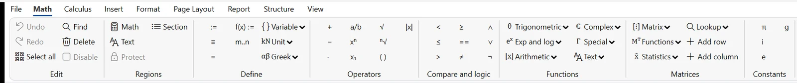

OCP Guide
Getting started
Install OCP, find your way around the window and the phone, and write your first calculation in two minutes.
Install
Windows 10 and 11
- Download the Windows setup.
- Run it. It installs for your user only, without administrator rights. If Windows SmartScreen says it does not know the app, choose More info › Run anyway.
- Start Open Calculation Platform from the Start menu. A newer setup run later updates it in place.
Prefer no installer? The portable zip runs from any folder.
Android 7 or later
- On your phone, download the Android APK.
- Open it. Android asks once to allow your browser to install apps: allow it, then install.
- Open OCP. It starts on a blank worksheet with a formula ready and the keypad up.
Your first calculation
Click anywhere on the paper and type. A formula starts where you click.
- Type L : 6 m, then Enter. The colon becomes
:=, “is defined as”. - Type q : 12 kN/m, then Enter.
- Type M : q*L^2, press → to leave the power, then /8=. The answer appears with its unit.
Change L to 8 m and M updates at once, along with everything below it that uses L.
The Windows window
Everything is on the ribbon, by task. Hover any button for an explanation and a real example with OCP's answer.
| Tab | What it holds |
|---|---|
| File | New, Open, Save, Save As, Export PDF, Export to Word, Plugin Manager, recent files, About. |
| Math | Undo, Find, Delete, Disable; new Math or Text regions, Sections, Protect; definitions, variables, units, Greek letters; operators, comparisons and logic; every function by kind; matrices; constants. |
| Calculus | Automatic or manual calculation, Run scripts, Calculate (F9); integrals, sums, derivatives and limits; symbolic keywords (→); the equation solver and solving functions; curve fitting; programming. |
| Insert | Math, Text, headings; tables, input tables, drop-down lists, sliders, check boxes, sketches, plots, pictures, included worksheets, solvers, Python scripts; Components, Tables, Directory, Python functions, Save as component; Excel; sections, hyperlinks, page breaks. |
| Format | Bold, italic, colours, highlight; fonts for all formulas; the unit system; result format and digits; Values in formulas; alignment and right to left; styles. |
| Page Layout | Paper size, portrait or landscape, margins. |
| Report | Report details (project, engineer…), header, contents, numbered headings; export to PDF or Word. |
| View | The Problems panel, warnings on the page, formula shortcuts. |
Beside the worksheet, the Problems panel lists errors and warnings (click one to go to it), and Functions lists the functions your plugins add. Each open worksheet has its own tab.

The phone app
The top bar has ☰ (start screen with recent worksheets), the worksheet's name and state, undo, redo, save and ⋮ (New calculation, Open, Save as, Share, Components, Save as component, Tables, Directory, Format and page, Page or Column view, Calculate now). Below the worksheet, OCP's own keypad types formulas: see The phone app.
Typing formulas
| Type | To get |
|---|---|
| : | := define a name |
| = | show the result |
| ~ | ≡ a global definition |
| / | a fraction (what comes before goes on top) |
| ^ | a power; → leaves it |
| _ | a subscript, part of the name: M_Ed → |
| * | multiplication · |
sqrt, alpha, sigma… | √, α, σ… |
| .. | a range, 1..10 |
| " in an empty formula | turn it into text |
| Enter / Tab | next line / next formula to the right |
More in Keyboard shortcuts.
Saving and opening
- Worksheets are saved as
.ocpfiles. OCP also opens Mathcad Prime.mcdxfiles (see Mathcad files). - Several worksheets open as tabs. Files given on the command line or opened from Explorer open as tabs too.
- OCP keeps an automatic copy of unsaved work. If it ever closes unexpectedly, it offers to recover it the next time it starts.
- On the phone, Open and Save as use Android's file picker, so worksheets can live in Downloads, Drive or any folder.